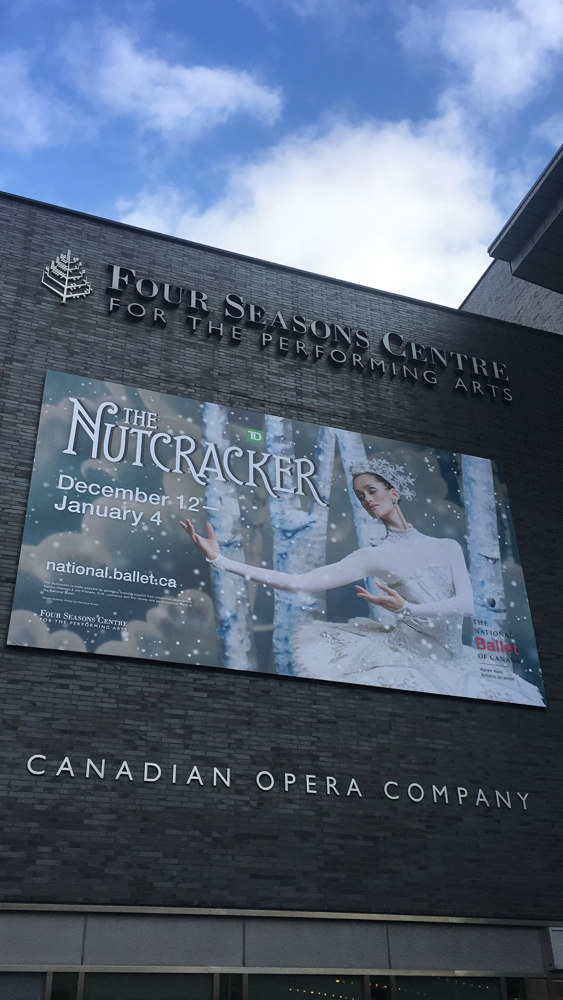

Homepage Basic Facts About Pearl Dance Legislative Page Program References

I have been dancing since the age of six. This is my favourite task to do because it releases all of my
bad energy and helps me feel happier when I dance to any relaxing music. It is also a form of exercise,
which is why my parents put me in dance in the first place. I started with ballet, but when attending an art
school in grade four, I began learning other styles of dance, like contemporary and modern. I have grown
to love all of them.
I started with Stepanova Ballet Academy. Tatiana Stepanova, the main teacher, helped me with my technique
and helped me with the basics of dance. Below, you will see photos of my past performances both on and off stage.


Here is a YouTube video that was filmed for marketing purposes for the studio. I was about seven or eight
years old in this video. See if you can spot me! You can also watch the video here.
After five years, I decided to change my classes from Stepanova Ballet Academy to dancing with the National Ballet of Canada’s
In-Studio program. The professional teachers and dancers helped me gain more passion for dance and also helped improve my pointe
shoe technique.

Last year around the holiday season, I performed eleven shows in the annual production of the Nutcracker with the National
Ballet of Canada. I was a cat soldier in the battle scene between the rats and Clara, the main character. Even though I played a
very small part of the entire show, it was an incredible experience. I was allowed to stay backstage to watch the second act of the
production, and I had a short glimpse of how they put the entire show together. I remember that six people had to push a giant moving Christmas
tree on stage every show during the first act. The Four Seasons Centre also has a huge stage and being able to perform on it was definitely
a dream come true.
